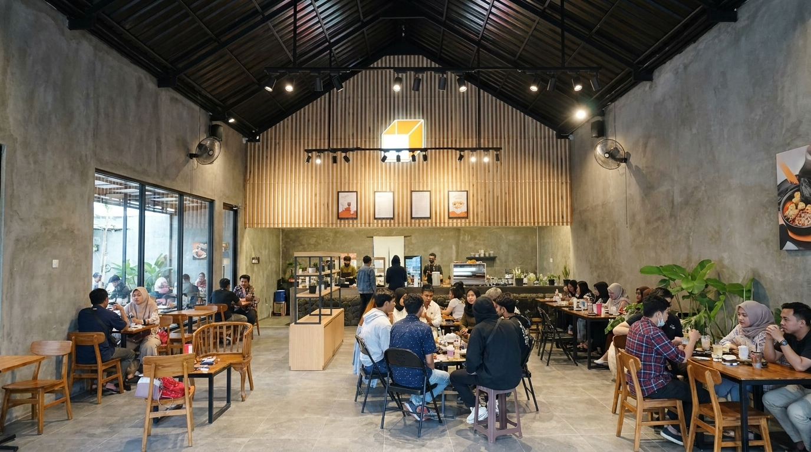
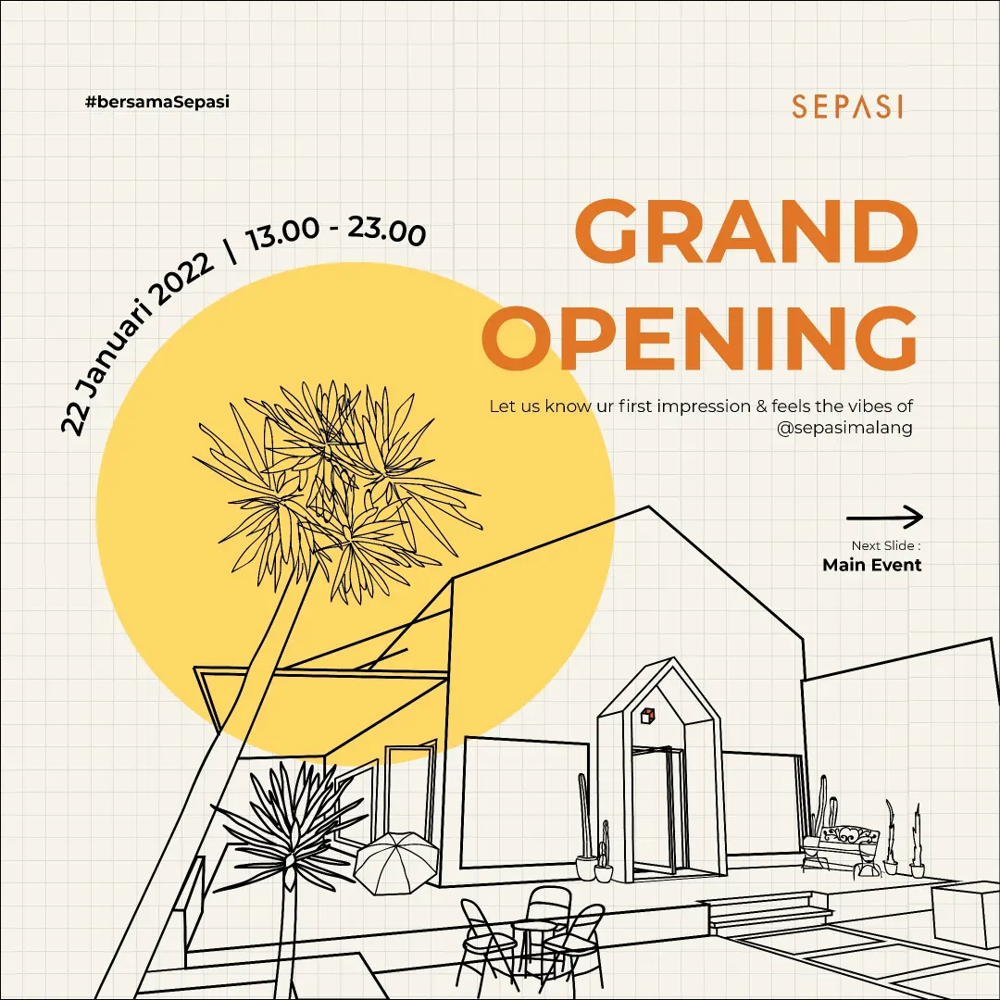
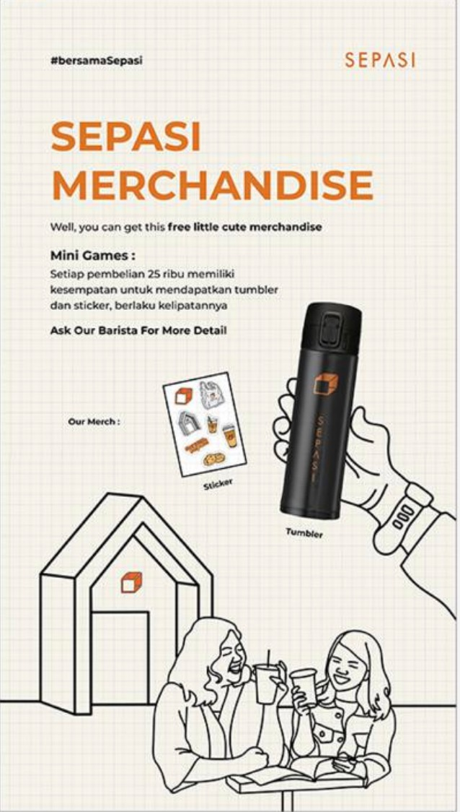
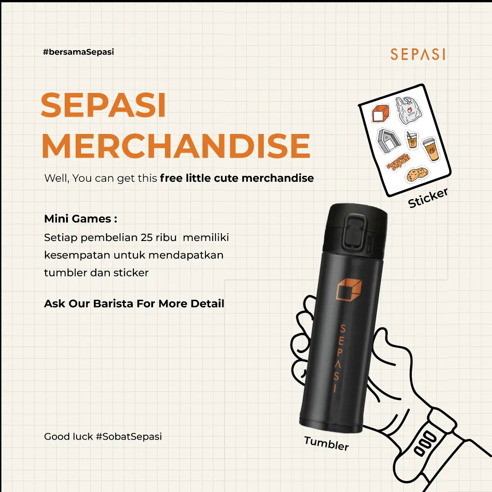
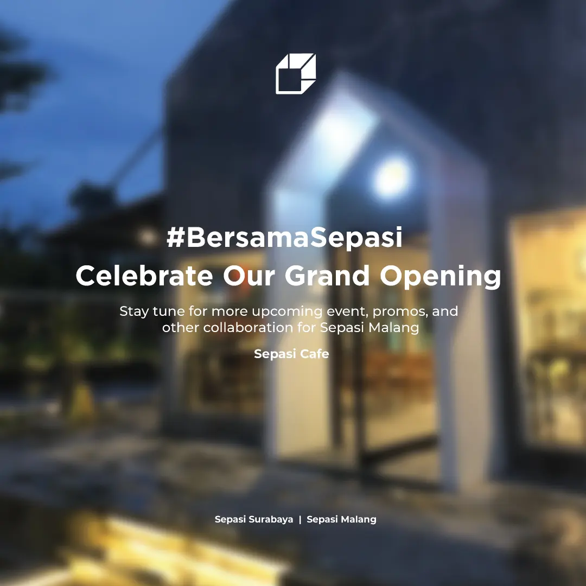
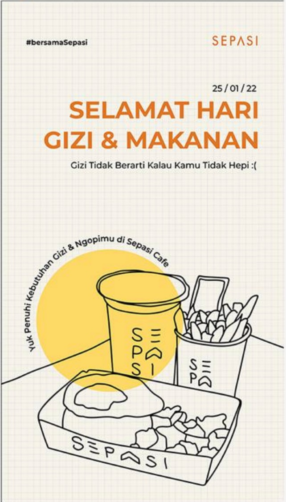

Sepasi Cafe is an industrial-concept cafe based in Surabaya and Malang — instagrammable, with affordable and unique menus. I handled their social media presence end-to-end: from content planning and copywriting to designing the feeds and stories that built their visual identity on Instagram.
Dua lini pekerjaan — Social Media Admin dan Graphic Design — yang aku kerjakan bersamaan untuk membangun presence Instagram Sepasi Cafe dari awal.
Beberapa hasil desain yang diproduksi untuk Instagram Sepasi Cafe — mulai dari Grand Opening announcement, merchandise promo, hingga konten event.




